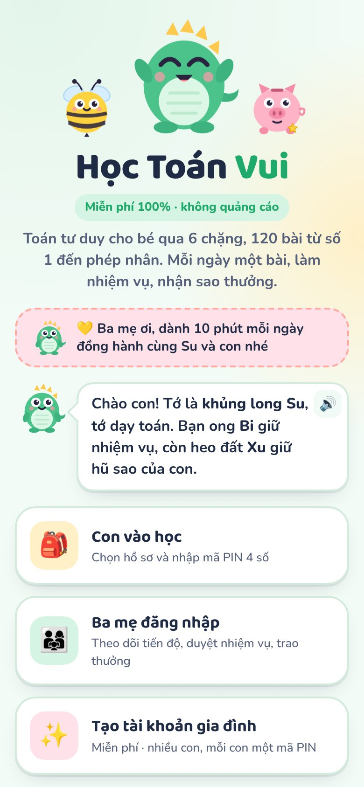
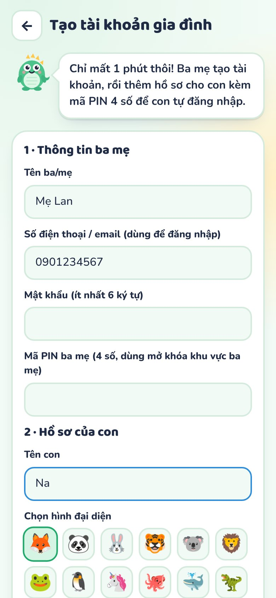
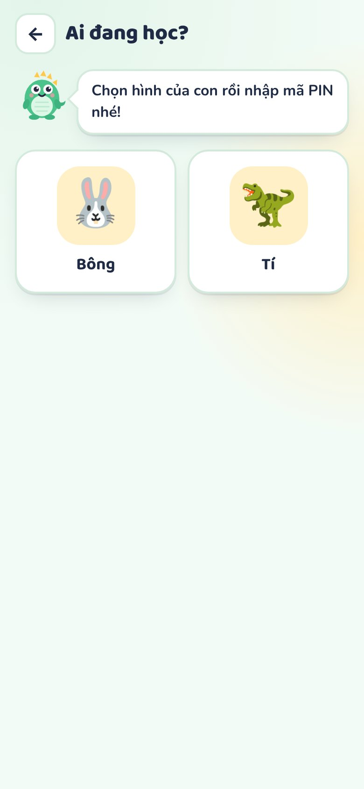
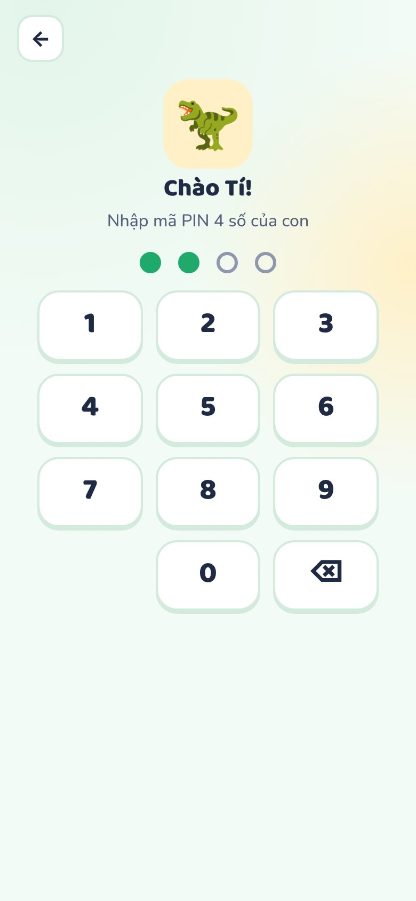
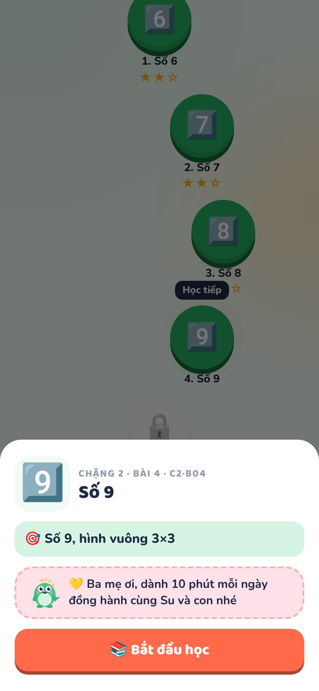
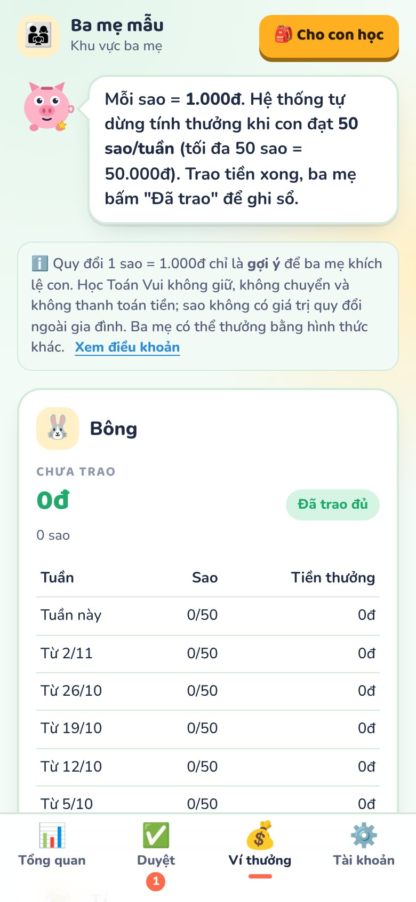
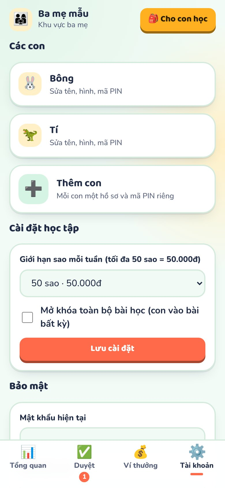
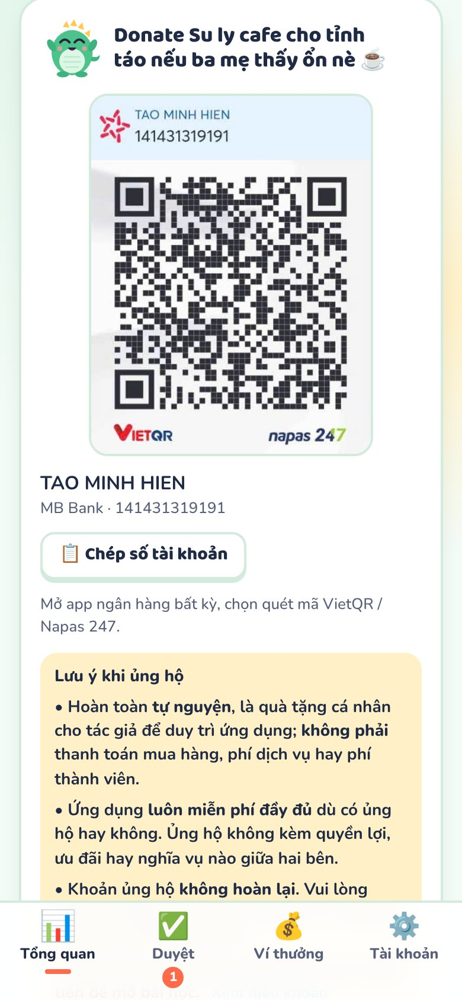

Học Toán Vui
Hướng dẫn sử dụng
Dành cho ba mẹ: cài đặt, tạo tài khoản, cùng con học mỗi ngày, duyệt nhiệm vụ và trao thưởng
Miễn phí 100% · không quảng cáo · không cần cài đặt 💛 Ba mẹ ơi, dành 10 phút mỗi ngày đồng hành cùng Su và con nhé!
💛 Ba mẹ ơi, dành 10 phút mỗi ngày đồng hành cùng Su và con nhé!Dành cho ba mẹ: cài đặt, tạo tài khoản, cùng con học mỗi ngày, duyệt nhiệm vụ và trao thưởng
Miễn phí 100% · không quảng cáo · không cần cài đặt💛 Ba mẹ ơi, dành 10 phút mỗi ngày đồng hành cùng Su và con nhé!Học Toán Vui · Hướng dẫn sử dụngTrang 2| 1. Mở app và thêm vào màn hình chính | 7. Hũ sao và tiền thưởng |
| 2. Tạo tài khoản gia đình | 8. Khu vực ba mẹ |
| 3. Con đăng nhập bằng mã PIN | 9. Bảo mật, sao lưu, chuyển máy |
| 4. Bản đồ học: 6 chặng, 120 bài | 10. 10 phút đồng hành mỗi ngày |
| 5. Một bài học diễn ra thế nào | 11. Câu hỏi thường gặp |
| 6. Nhiệm vụ ở nhà | 12. Ủng hộ và điều khoản |
💛 Ba mẹ ơi, dành 10 phút mỗi ngày đồng hành cùng Su và con nhé. Con học vui hơn, nhớ lâu hơn khi có ba mẹ ngồi cạnh.Học Toán Vui là web app: không cần tải từ App Store hay CH Play. Ba mẹ chỉ cần mở đường link hoặc quét mã QR ở trang bìa.
Biểu tượng khủng long Su sẽ xuất hiện như một app bình thường. Sau lần mở đầu tiên, app vẫn mở được khi mất mạng.
Màn chào có 3 lựa chọn: 🎒 Con vào học (con chọn hồ sơ, nhập PIN), 👨👩👧 Ba mẹ đăng nhập (theo dõi, duyệt nhiệm vụ, trao thưởng) và ✨ Tạo tài khoản gia đình. Ba người bạn đồng hành cùng con: khủng long Su dạy toán, ong Bi giữ nhiệm vụ, heo đất Xu giữ hũ sao.

Học Toán Vui · Hướng dẫn sử dụngTrang 3Bấm Tạo tài khoản gia đình và điền:
Nhà có nhiều con? Sau khi tạo xong, vào Khu vực ba mẹ → Tài khoản → Thêm con. Mỗi con có hồ sơ, tiến độ và hũ sao riêng.

Nhập sai PIN, Su sẽ nhắc con thử lại. Với bé chưa thuộc số, ba mẹ nhập giúp con trong những ngày đầu, rồi tập cho con tự nhập. Đây cũng là một bài tập nhận diện chữ số nhỏ!
💛 Những ngày đầu, ba mẹ ngồi cạnh và cùng con bấm "Bắt đầu học" nhé.

Học Toán Vui · Hướng dẫn sử dụngTrang 4Tab 🗺️ Học là bản đồ hành trình của con. Mỗi vòng tròn là một bài, xếp theo thứ tự từ dễ đến khó. Sau mỗi 5 bài có một 🏆 Thử thách ôn tập.
| Chặng | Thế giới | Số bài | Con học gì |
|---|---|---|---|
| 1 | ⛰️ Đồi Số Đếm | 20 | Số 0–5, đếm, gộp, tách, so sánh nhiều hơn/ít hơn |
| 2 | 🌈 Thung Lũng Phép Cộng | 30 | Số 6–10, cộng, trừ, chẵn lẻ, gấp đôi, bạn của 10 |
| 3 | 🏙️ Thành Phố Số 20 | 30 | Số 11–20, chục và đơn vị, hình chữ nhật, nhân, chia |
| 4 | 🎪 Rạp Xiếc Số Lớn | 5 | Số 21–50, số vuông, đếm theo chục |
| 5 | 🗼 Tháp Trăm Nghìn | 5 | Số 60–1000, hàng trăm, hàng nghìn |
| 6 | 🚀 Vũ Trụ Phép Nhân | 30 | Bảng nhân, chia, thừa số, số vuông, toán có lời văn |
Chạm vào bài để xem mục tiêu bài học (ví dụ "Số 9, hình vuông 3×3") và kết quả tốt nhất, rồi bấm 📚 Bắt đầu học.


Học Toán Vui · Hướng dẫn sử dụngTrang 5Mỗi bài kéo dài khoảng 5–10 phút, gồm 3 bước:


| Số câu đúng (trên 8) | Kết quả |
|---|---|
| 7–8 câu | ⭐⭐⭐ Xuất sắc |
| 5–6 câu | ⭐⭐ Giỏi lắm |
| 3–4 câu | ⭐ Hoàn thành, mở bài tiếp theo |
| 0–2 câu | Chưa có sao, Su động viên con học lại |
💛 Ba mẹ ơi, khi con trả lời sai, hãy cùng con đếm lại bằng đồ vật thật. 10 phút ngồi cạnh con quý hơn mọi câu trả lời đúng!Học Toán Vui · Hướng dẫn sử dụngTrang 6Mỗi bài có một nhiệm vụ đời thực, giúp con dùng toán trong cuộc sống: đếm bát trên mâm cơm, xếp tất thành từng đôi, chia trái cây đều cho cả nhà, đo chiều cao đồ chơi bằng gang tay…
Mục Mục tiêu hôm nay nhắc con học 2 bài mỗi ngày để giữ chuỗi 🔥.
💛 Nhiệm vụ là lúc đẹp nhất để ba mẹ đồng hành: chỉ cần vài phút cùng con đếm, xếp, chia đồ vật trong nhà.
Tab 🐷 Hũ sao cho con thấy công sức của mình:
| Cách nhận sao | Số sao |
|---|---|
| Mỗi bài học | 1–3 |
| Mỗi thử thách (sau 5 bài) | 1–3 |
| Mỗi nhiệm vụ ba mẹ xác nhận | 2 |
| Ba mẹ thưởng thêm | 1–5 |
 Học Toán Vui · Hướng dẫn sử dụngTrang 7
Học Toán Vui · Hướng dẫn sử dụngTrang 7Mở bằng Ba mẹ đăng nhập ở màn chào, hoặc từ tab Của con → Khu vực ba mẹ (cần mật khẩu hoặc mã PIN ba mẹ). Có 4 tab:




Mỗi con một thẻ: số bài đã học / 120, sao tuần này, tiền chưa trao, chặng đang học, chuỗi ngày 🔥 và 4 bài gần nhất. 💡 Gợi ý cho biết bài nào nên ôn lại (mới đạt 1 sao), con đã nghỉ mấy ngày, có nhiệm vụ nào đang chờ.
Xác nhận nhiệm vụ con đã làm (+2 sao) hoặc yêu cầu làm lại. Mục Thưởng thêm sao: chọn con, số sao (1, 2, 3, 5) và ghi lý do, ví dụ "Tự giác học bài".
Số tiền chưa trao của từng con và bảng sao 6 tuần gần nhất. Trao thưởng xong, bấm Đã trao thưởng → Xác nhận để ghi sổ. Lịch sử trao thưởng được lưu lại.
Thêm/sửa/xóa hồ sơ con và đổi PIN của con; đặt giới hạn sao mỗi tuần (10–50); mở khóa toàn bộ bài; đổi mật khẩu và PIN ba mẹ; sao lưu/khôi phục; xem Điều khoản; đăng xuất.
💛 Mỗi tối, ba mẹ dành 1 phút xem Tổng quan, duyệt nhiệm vụ và khen con một câu thật cụ thể nhé.Học Toán Vui · Hướng dẫn sử dụngTrang 8💛 Ba mẹ ơi, dành 10 phút mỗi ngày đồng hành cùng Su và con nhé!Gợi ý một buổi học 10 phút:
| Thời gian | Ba mẹ và con cùng làm |
|---|---|
| Phút 1–2 | Hỏi con hôm qua học gì, mở bản đồ xem bài "Học tiếp". |
| Phút 3–7 | Ngồi cạnh con học bài mới: đọc to câu hỏi, để con tự chọn đáp án, khi sai thì cùng đếm lại bằng ngón tay hoặc đồ vật. |
| Phút 8–10 | Khen con, đọc nhiệm vụ của ong Bi, hẹn giờ cùng làm nhiệm vụ (lúc ăn cơm, dọn đồ chơi, đi chợ…). |
Học Toán Vui · Hướng dẫn sử dụngTrang 9Khoảng 4–8 tuổi (mầm non đến lớp 2–3). Bé nhỏ bắt đầu từ Chặng 1; bé lớn có thể nhờ ba mẹ mở khóa để vào thẳng phần phù hợp.
Máy chưa có giọng đọc tiếng Việt. Ba mẹ cài thêm trong Cài đặt → Trợ năng → Chuyển văn bản thành giọng nói, hoặc đọc giúp con. Con vẫn học bình thường.
Đóng hẳn app/trình duyệt rồi mở lại. Trên máy tính, bấm Ctrl + Shift + R.
Được. Mỗi con một hồ sơ và mã PIN riêng; tiến độ và hũ sao tách biệt.
Dữ liệu không tự đồng bộ. Ba mẹ dùng chức năng sao lưu/khôi phục để chuyển dữ liệu giữa các máy.
Không. App miễn phí đầy đủ, không quảng cáo, không bao giờ yêu cầu chuyển tiền để mở bài.
Nếu thấy app hữu ích, ba mẹ có thể donate Su ly cafe qua mã VietQR ở màn Ba mẹ đăng nhập hoặc tab Tổng quan (MB Bank · TAO MINH HIEN · 141431319191).

Cảm ơn ba mẹ đã đồng hành cùng con! 💛